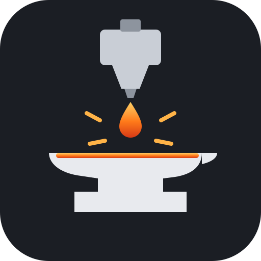

Spools
SV06 Reforged 1.1 or newer
Set up the spools your printer keeps track of. Connect over USB, or make a file to print from the SD card.
How it works
- After every print, the printer subtracts the filament it actually used from the spool the print ran on.
- The spool is picked from the file's material. If you have one PLA spool, a PLA file uses it. If you have several, the printer shows them before the print starts so you can pick the right one. You can always change it there.
- Spools don't change temperatures. Your slicer profile sets those, as before.
Not connected.
Your browser will ask to allow access to serial ports; allow it, then pick the port named "USB2.0-Serial" or "CH340". Chrome or Edge work best.
Log
Add a spool
Spools
Connect to see the spools on your printer.
More details
"Grams left" of 0 means "not set": no warnings for that spool. Before a print, the printer warns when the file needs more than is left, or when no spool of the file's material is set up.
Optional: to always use one exact spool for a slicer filament profile, add M1100 A2 (with your slot
number) to that profile's start G-code.